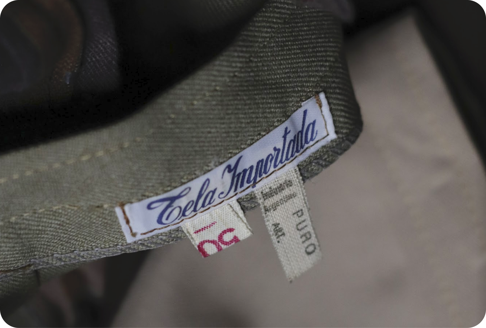
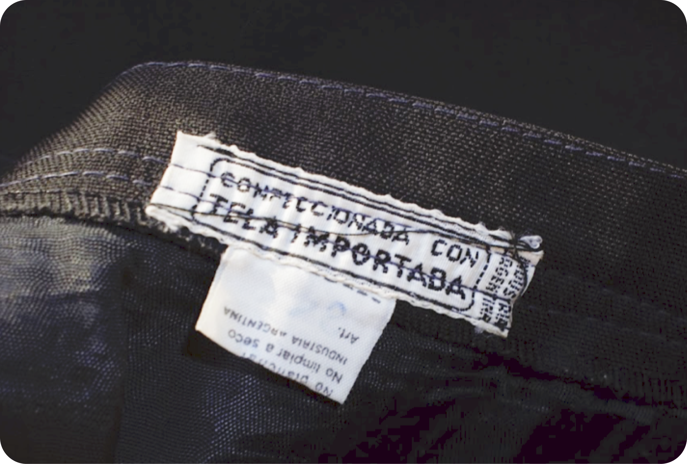

Lote de polleras de vestir, junto a un conjunto de telas sin uso, la mayoría de
origen importado.
“Entre las décadas del 60’ y 80’ el buen vestir de las mujeres en el trabajo, oficinas, bancos etc.,
consistía en trajecitos con falda y saco o vestidos. En aquella época se le daba mucha importancia a
la formalidad, las telas siempre iban muy bien planchada. Como los modelos eran muy parecidos, se
jugaba con los colores y las texturas.
Una persona que admiro, escribana, tenía entre 20 y 30 faldas todas de diferentes colores, de
invierno y de verano...”
Textiles de “Adecam”


Textiles camiseros de un stock guardado en Liniers, perteneció a una fábrica de camisas familiar.
“Adecam fue una fábrica de camisas en el barrio de Liniers. Se fundó en el año 1969 por mi bisabuelo,
Adelino de Abrantes, un portugués que llegó con su familia a Argentina. Fue pasante haciendo cuellos
duros, luego se abrió por su parte.
Adelino comenzó haciendo calzoncillos, la tradición siguió con mi abuelo, que lleva el nombre de su
padre, y comenzaron a hacer camisas. Lamentablemente el negocio vio su fin en la crisis del 2000,
cuando tuvieron que cerrar el taller”.
¡Sé parte de nuestro proyecto!

Ponemos en práctica el mundo donde queremos vivir. Para nuestro proceso de
recuperación de materiales
recibimos prendas y telas que valores y las transformamos en algo nuevo. Escribinos a nuestro
Instagram o a anacerutti10@gmail.com.